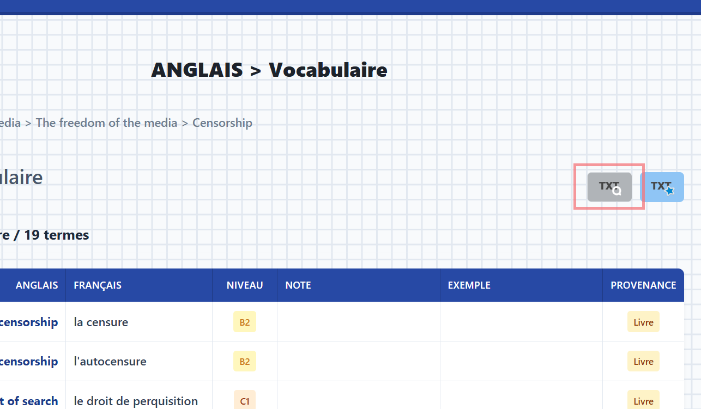
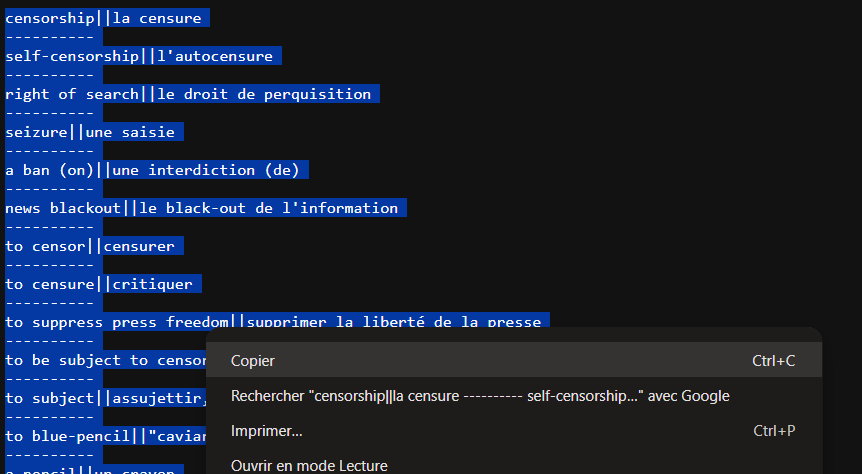
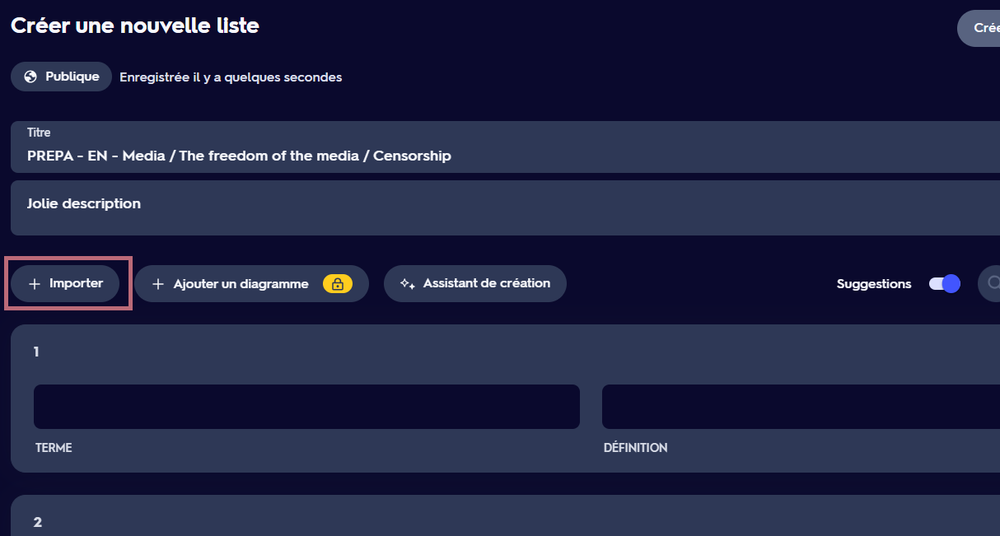
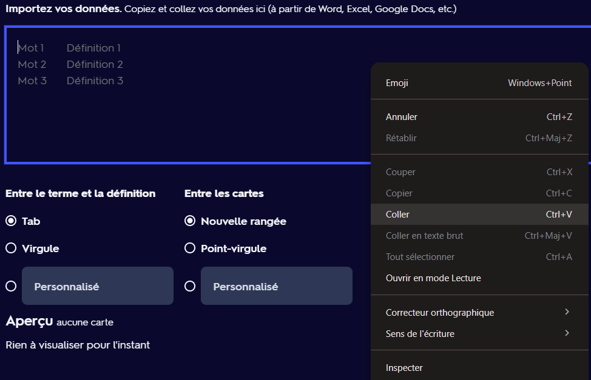
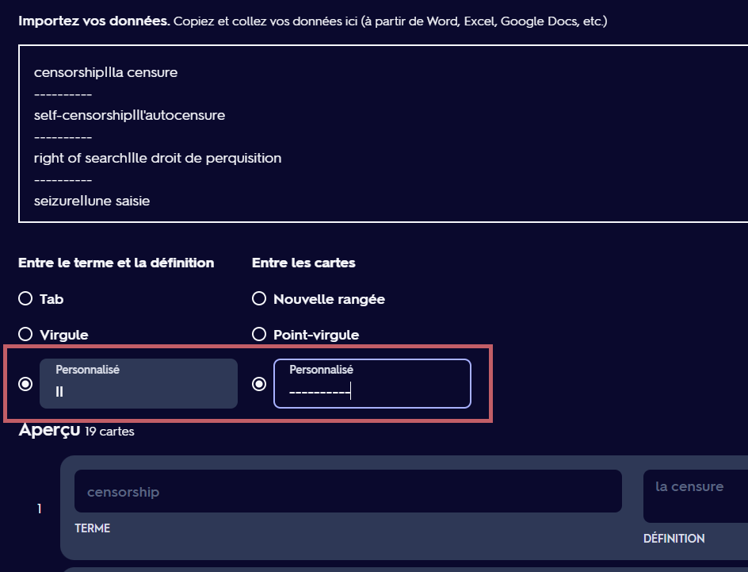

Quizlet d'anglais
Je peux pas automatiser la création des quizlets pour réviser les fiches malheuresement.
Ce qu'on peut faire cependant c'est qu'à partir des fichiers textes que je peux créer automatiquement, n'importe qui peut créer le quizlet et j'ajoute après le lien sur la page de la fiche pour le partager à tout le monde.
Voici la démarche à suivre pour créer un Quizlet d'une fiche :
1 - Copiez le texte dans le fichier qui se télécharge ou s'affiche quand vous cliquez sur l'icône TXT Q


2 - Sur Quizlet, créez une liste, donnez lui un joli nom puis cliquez sur Importer et collez le texte dans la zone dédiée


3 - Mettez dans "Entre le terme et la définition" deux barres verticales : ||, et dans "Entre les cartes" 10 tirets : ----------

4 - Enfin cliquez sur Importer, puis sur Créer, et voilà